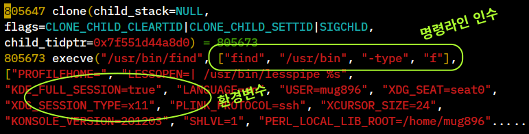

xargs
명령 라인에서 인수 크기의 제한
shell 에서 명령을 실행할 때 전달되는 인수의 개수가 너무 많지 않을까? 하고
생각해본 적은 없으신가요?
명령이 실행될 때는 명령 라인에서 작성한 인수들과 환경 변수값들이 exec 시스템콜 함수에
포인터 값으로 전달되는데 여기에는 사용할 수 있는 크기에 제한이 있습니다.

다음을 보면 명령 치환을 이용해 find 명령의 출력을 그대로 test.sh 명령의
인수 값으로 사용하고 있는데요. 디렉토리를 /usr 로 변경한 후에는
Argument list too long 오류가 발생하는 것을 볼 수 있습니다.
$ cat test.sh
#!/bin/bash
echo "number of ARGS: ${#@}"
$ ./test.sh `find /usr/include -type f` # /usr/include 디렉토리
number of ARGS: 6224
$ ./test.sh `find /usr -type f` # /usr 디렉토리
bash: ./test.sh: Argument list too long # 오류
$ grep -l hello /usr/**/*.h # 확장 패턴 사용
bash: /usr/bin/grep: Argument list too long # 오류
명령문에서 사용할 수 있는 인수의 크기는 xargs --show-limits 옵션을 이용해 조회해볼 수 있습니다.
$ xargs --show-limits
Your environment variables take up 5676 bytes
POSIX upper limit on argument length (this system): 2089428
POSIX smallest allowable upper limit on argument length (all systems): 4096
Maximum length of command we could actually use: 2083752
Size of command buffer we are actually using: 131072
Maximum parallelism (--max-procs must be no greater): 2147483647
테스트를 해보면 인수 하나의 크기는 131072 를 넘을 수 없습니다.
명령 라인에 이 크기의 인수를 계속 더해보면 2083752 정도까지 추가되는데
이 크기를 넘어서면 Argument list too long 오류가 발생합니다.
테스트에는 /bin/echo 외부 명령을 사용했는데 builtin echo 명령의 경우
실행시 exec 시스템콜이 사용되지 않으므로 이와 같은 제한이 없습니다.
$ /bin/echo /usr/**/*.h # /bin/echo 외부 명령
bash: /bin/echo: Argument list too long
$ ls /usr/**/*.h # ls 외부 명령
bash: /usr/bin/ls: Argument list too long
$ echo /usr/**/*.h # builtin echo 명령
/usr/aarch64-linux-gnu/include/a.out.h /usr/aarch64-linux-gnu/include/aio.h .....
$ printf '%s\n' /usr/**/*.h # builtin printf 명령
/usr/aarch64-linux-gnu/include/a.out.h
/usr/aarch64-linux-gnu/include/aio.h
/usr/aarch64-linux-gnu/include/aliases.h
. . .
따라서 위와 같이 오류가 발생하는 경우에는 인수의 개수를 분리해서 test.sh 명령을
여러번 실행해 줘야 하는데 xargs 명령을 이용하면 이것을 자동으로 처리해 줍니다.
xargs 명령은 전달된 인수의 전체 크기가 131072 를 넘을 경우 새로 프로세스를 생성해서
다음 인수들을 전달합니다.
$ cat test.sh
#!/bin/bash
echo "chars of ARGS: `echo -n "$*" | wc -c`, number of ARGS: ${#@}"
$ find /usr -type f -print0 | xargs -0 ./test.sh
chars of ARGS: 131016, number of ARGS: 3999
chars of ARGS: 131023, number of ARGS: 1953 # 새로 프로세스를 생성하여 처리한다.
chars of ARGS: 131031, number of ARGS: 1962
. . .
$ printf "%s\0" /usr/**/*.h | xargs -0 grep -l hello
/usr/include/bash/builtins/common.h
/usr/include/linux/if_bridge.h
/usr/include/linux/netfilter_bridge/ebt_stp.h
. . .
$ find /usr -type f -exec ./test.sh {} + # find 명령의 -exec 을 이용하는 방법
chars of ARGS: 131016, number of ARGS: 3999
chars of ARGS: 131023, number of ARGS: 1953
chars of ARGS: 131031, number of ARGS: 1962
. . .
파일명에 공백이 포함될 경우
파일 이름에 공백이 포함되면 복수개의 인수로 인식이 되므로 xargs -0 옵션을 이용해
공백문자 대신 NUL 문자를 인수를 구분하는데 사용해야 합니다.
이때 find 명령에서는 -print0 를 이용해 출력해야 합니다.
$ find /usr -type f | wc -l
252939 # 전체 파일개수
# xargs -0 옵션을 사용하지 않을 경우 전체 파일 개수가 다르게 출력된다.
# (sum += $NF 는 위의 test.sh 출력에서 마지막 위치의 값을 sum 변수에 추가합니다.)
$ find /usr -type f | xargs ./test.sh | awk '{ sum += $NF } END{ print sum }'
253106
----------------------------------------------------------------------------
# xargs -0 옵션을 사용하면 올바로 출력된다.
$ find /usr -type f -print0 | xargs -0 ./test.sh | awk '{ sum += $NF } END{ print sum }'
252939
# "./test.sh {} +" 는 find 명령에 의해 처리되므로 올바로 출력된다.
$ find /usr -type f -exec ./test.sh {} + | awk '{ sum += $NF } END{ print sum }'
252939
$ printf "aaa bbb\nccc" | xargs ./test.sh # aaa bbb 가 2 개의 인수로 인식되어
chars of ARGS: 11, number of ARGS: 3 # 총 3 개의 인수가 된다.
$ printf "aaa bbb\0ccc" | xargs -0 ./test.sh # NUL 문자를 인수 구분자로 하면 aaa bbb 가
chars of ARGS: 11, number of ARGS: 2 # 1 개의 인수가 되어 총 2 개의 인수가 된다.
$ printf "aaa bbb\nccc" | xargs -i ./test.sh {} # xargs -i 옵션과 {} 를 사용할 경우는
chars of ARGS: 7, number of ARGS: 1 # find 명령에서처럼 인수가 라인 단위로
chars of ARGS: 3, number of ARGS: 1 # {} 에 할당되므로 총 2 개의 인수가 된다.
-I 옵션
xargs 명령의 -i 옵션과 {} 를 사용하는 방법은
find 명령의 {} 와 \; 를 사용하는 방법과 동일하게 동작합니다.
다시 말해서 최대한 전달할 수 있는 인수들을 한번에 명령에 전달해서 실행시키는 것이 아니라
인수 하나당 명령 한번을 실행시킵니다.
# 인수 하나당 grep 명령 한번을 실행. {} 가 전달된 인수와 매칭이 된다.
$ printf "%s\n" /usr/**/*.h | xargs -i grep -l hello {}
/usr/include/bash/builtins/common.h
/usr/include/linux/if_bridge.h
/usr/include/linux/netfilter_bridge/ebt_stp.h
. . .
# grep 명령 한번을 실행할때 여러개의 인수를 전달해서 실행하므로 생성해야될
# 프로세스가 적어 결과는 위의 명령과 같지만 실행 속도에서 차이가 많이 난다.
$ printf "%s\0" /usr/**/*.h | xargs -0 grep -l hello
. . .
그런데 만약에 실행될 명령문에 {} 스트링이 다른 용도로 사용되고 있다면
이때는 -I 옵션을 이용해 {} 대신에 다른 스트링을 지정해 사용할 수 있습니다.
# "{} value is: ..." 로 시작하는 출력을 기대했지만 {} 도 함께 치환이 된다.
$ printf "aaa bbb\nccc" | xargs -i sh -c 'echo "{} value is: {}"'
aaa bbb value is: aaa bbb
ccc value is: ccc
# -I 옵션을 이용하면 {} 대신에 다른 스트링을 지정할 수 있다.
$ printf "aaa bbb\nccc" | xargs -I ARG sh -c 'echo "{} value is: ARG"'
{} value is: aaa bbb
{} value is: ccc
-d , -t , -n 옵션
인수들은 기본적으로 공백에 의해 분리되는데 -d (delimiter) 옵션을 이용해
변경할 수 있습니다.
$ echo -n "foo;bar;zoo" | xargs -d ';' echo
foo bar zoo
-t 옵션은 명령 실행전에 먼저 실행될 명령문을 stderr 를 통해 보여줍니다.
xargs 에 의해 인수들이 어떻게 분리되어 실행되는지 볼 수 있습니다.
-n 옵션으로는 인수 개수를 지정할 수 있습니다.
$ echo -n "foo;bar;zoo" | xargs -d ';' -t echo
echo foo bar zoo
foo bar zoo # 한번의 echo 명령에 foo bar zoo 세 개의 인수가 전달되어 실행된다.
$ echo -en "foo;bar;zoo\naaa;bbb;ccc" | xargs -d ';' -t echo
echo foo bar 'zoo'$'\n''aaa' bbb ccc
foo bar zoo # newline 에서 분리되지 않고 한번의 echo 명령이 실행된다.
aaa bbb ccc # 'zoo'$'\n''aaa' 가 하나의 인수가 된다.
$ echo -n "foo;bar;zoo" | xargs -d ';' -t -n1 echo
echo foo
foo
echo bar # -n1 옵션에 의해 echo 명령에 1 개의 인수가 전달되어 실행된다.
bar
echo zoo
zoo
멀티 프로세스 실행
shell 에서 멀티 코어 CPU 를 활용해 빠르게 작업을 처리하고자 할때는
xargs 에서 제공하는 -P, --max-procs=MAX-PROCS 옵션을 사용하면 됩니다.
xargs 는 -P 옵션에서 설정한 값에 따라 프로세스를 생성해서 명령을 실행합니다.
가령 -P 8 옵션을 사용하면 전달되는 인수가 모두 처리될 때까지 8 개의 프로세스를
유지하면서 작업을 처리해 줍니다.
$ ls split-*
split-001 split-002 split-003 split-004 split-005 ...
$ printf "%s\n" split-* |
xargs -P `nproc` -i sh -c 'file="{}"; some-command "$file" > "result-${file#split-}"'
$ ls
split-001 split-002 split-003 split-004 split-005 ...
result-001 result-002 result-003 result-004 result-005 ...
$ cat result-* > result-done
# 명령 구분 라인으로 "#############" 를 사용 (shell, awk, perl, python 총 4 개 명령)
$ cat commands.txt
echo "shell BASHPID : $BASHPID"
for ((i=0; i<5; ++i)) {
echo "this is shell"
sleep 1
}
#####################################
echo "awk BASHPID : $BASHPID"
awk '@load "time"; BEGIN {
for (i=0; i<5; ++i) {
print "this is awk"
sleep(1)
}
}'
#####################################
echo "perl BASHPID : $BASHPID"
perl -l <<\@
for (1..5) {
print "this is perl";
sleep 1;
}
@
######################################
echo "python3 BASHPID : $BASHPID"
python3 <<\@
import time
for i in range(5):
print("this is python")
time.sleep(1)
@
------------------------------------------------------------------------
# 명령 구분 라인 ########### 을 sed 를 이용해 NUL 문자로 변환하여 xargs 에 전달.
# -P4 옵션을 설정하였으므로 4 개의 명령이 동시에 실행됩니다.
$ cat commands.txt | sed -E 's/^#{10,}$/\x0/' | xargs -P4 -0 -i bash -c {}
shell BASHPID : 3231305
this is shell
awk BASHPID : 3231306
perl BASHPID : 3231307
python3 BASHPID : 3231308
this is awk
this is perl
this is python
this is shell
this is awk
this is perl
this is python
this is awk # 4 개의 명령이 동시에 실행된다.
this is perl
this is shell
this is python
this is awk
this is perl
this is shell
this is python
this is awk
this is perl
this is shell
this is python